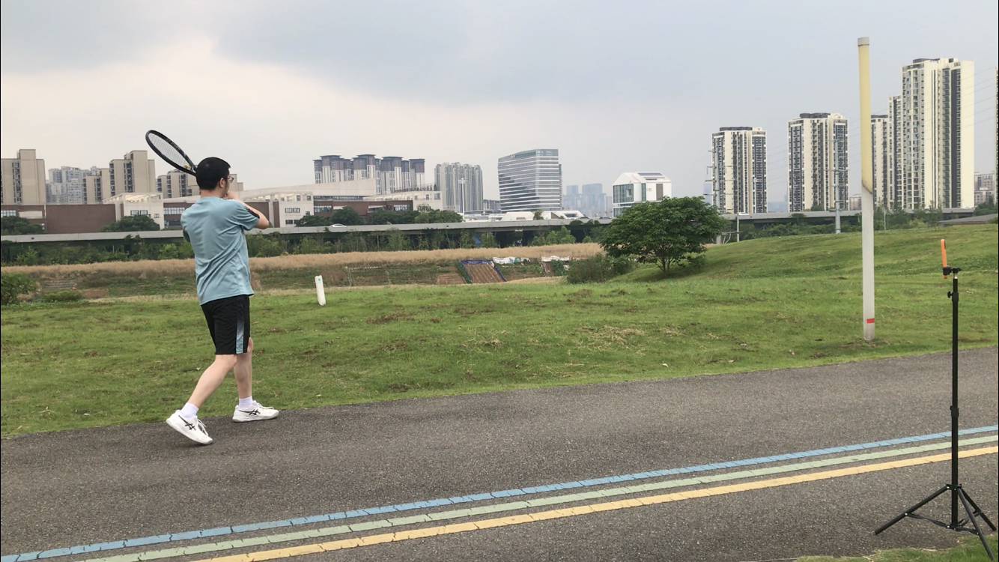
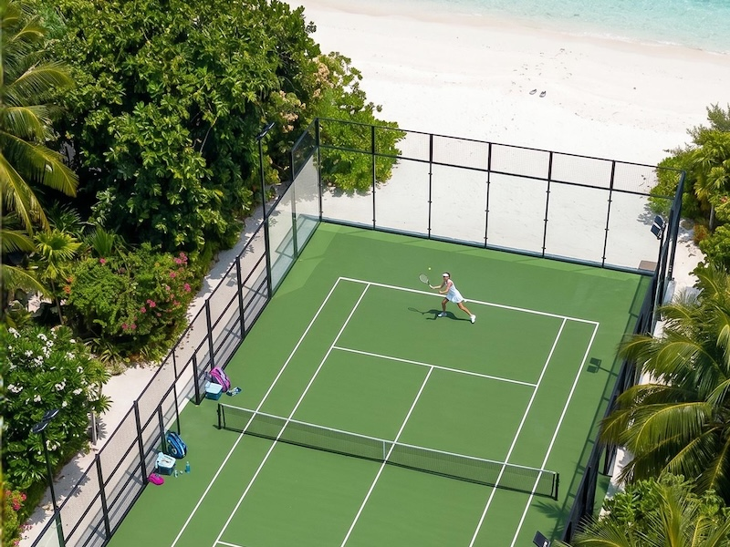
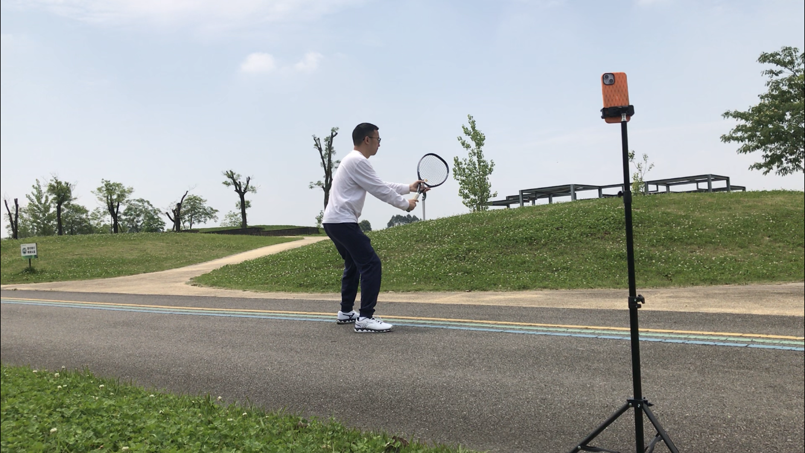

100% 本地离线运行，实时追踪 3D 姿态，精准分析你的每一次挥拍。
通过设备端前沿的 MediaPipe 视觉模型，精准追踪 33 个 3D 人体关键点。实时拆解您的正手引拍、转体与随挥动作，并在出现错误动作时提供即时的语音反馈，帮助您建立正确的肌肉记忆。

专为双手反拍设计的检测逻辑，深度剖析重心转移与发力结构。智能识别击球点是否过晚、转体是否充分，以数据驱动您的网球技术进阶。

自定义组数与每组次数，启动后 AI 将自动为您精准计数。智能管理休息间隔，完成后自动生成并保存本地练习报表，让您的每一次汗水都有迹可循。

我们期待听到您的声音，共同打磨更纯粹的网球工具。
TennisBee@qq.comRuns 100% offline. Tracks 3D posture in real-time to analyze every swing with precision.
Utilizing edge-based MediaPipe vision models to accurately track 33 3D body landmarks. It breaks down your forehand preparation, rotation, and follow-through in real-time, providing instant audio feedback on incorrect movements to help build proper muscle memory.
Detection logic specifically designed for the two-handed backhand, deeply analyzing weight transfer and power structure. It smartly identifies issues like late contact points or insufficient rotation, driving your technique advancement with data.
Customize your sets and reps. Once started, the AI will accurately count for you. It intelligently manages rest intervals and automatically generates a local practice report upon completion, ensuring every drop of sweat is tracked.
We look forward to hearing from you to refine this pure tennis tool together.
TennisBee@qq.com